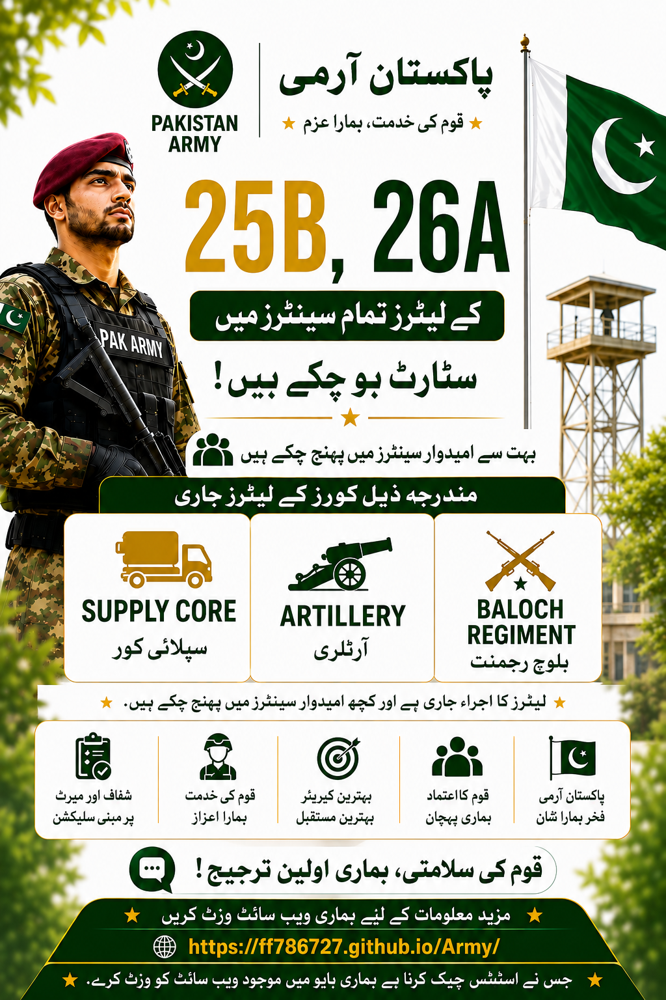

Pakistan Army Soldier Recruitment Process
1. Selection Center Reporting aur Initial Screening
- AS&RC Reporting: Candidates sab se pehle apne mutaluqa Army Selection and Recruitment Center (AS&RC) mein jaate hain.
- Physical Measurement: Sab se pehle aap ka Qad (Height) aur Chaati (Chest) check ki jaati hai.
- Document Checking: Us ke baad aap ke tamaam documents verify kiye jaate hain.
2. Online Registration aur Slip
- Online Registration: Documents check hone ke baad candidates ko center ke andar online registration ke liye bheja jaata hai, jahan Pakistan Army ki official website par registration hoti hai.
- Registration Slip: Details submit hone ke baad aap ko ek online slip milti hai. Kuch documents attach karke submit ho jaate hain aur online slip aap ko de di jaati hai.
3. Testing Phase
- Intelligence Test: Pehla test Intelligence Test hota hai (MCQs base). Jo candidate yeh test fail kar jata hai, woh wahin se bahar ho jata hai.
- Personality Test: Intelligence test pass karne ke baad Personality Test hota hai.
Zaroori Baat: Is test ke numbers nahi hote, lekin yeh aap ki Corps/Arm decision mein sab se zaroori role play karta hai. Is test ko kabhi bhi mat chhorain aur poora attempt karain.
- Written Test (English & Translation): Us ke baad written test hota hai jis mein English likhni hoti hai, paragraph translation aur sentence making wagera shamil hoti hai.
- Academic Test: Phir ek MCQs base Academic Test hota hai.
- Pass Stamp: Jab aap yeh sab tests pass kar lete hain, toh aap ki slip par PASSED ki stamp lag jaati hai aur agle din physical test ke liye bulaya jaata hai.
4. Physical Test
- Daud (Running): Agle din sab se pehle running (daud) hoti hai.
- Physical Exercises: Running pass karne ke baad Push-ups, Sit-ups, aur Chin-ups ka test hota hai.
- Physical Stamp: Yeh sab clear karne ke baad slip par Physical Test pass hone ki stamp lag jaati hai.
5. Initial Medical Examination
Physical test ke baad Initial Medical hota hai jis mein taangain, body structure aur baaqi jism ka muaina kiya jaata hai.
Initial Medical clear hone ke baad medical stamp lag jaati hai aur candidates ko ghar bhej diya jaata hai.
6. Trade Test aur Corps Allocation
- Trade Test Option: Agar aap ka physical aur academic merit acha hai (A ya B grade hai), toh aap ko Trade Test dene ka mauqa milta hai.
- Specialized Corps (EME / AMC): Jo candidates Trade Test mein 80% ya us se ziada marks lete hain, un ko un ki pasand ya technical Corps jaise EME ya AMC mein bhej diya jaata hai.
- Agar Trade Test fail ho jaye toh merit thoda low ho jata hai aur candidate ko kisi doosri Regiment ya Corps mein allocate kar diya jaata hai.
7. Final Merit List aur Medical Call
- High Merit: Jin candidates ka merit high hota hai, un ko final medical call aur training center ki joining letter mil jaati hai.
- Fair Merit: Normal merit wale candidates ko un ke marks ke hisab se call aati hai.
- Low Merit / Waiting List: Low merit wale candidates ko call nahi aati ya woh waiting list mein chale jaate hain.